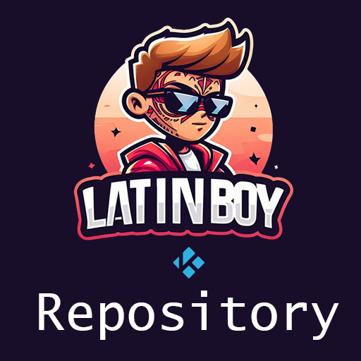

Latinboy Repo
Repositorio Oficial de Addons y Herramientas
Añade esta URL en tu gestor de archivos de Kodi:
https://latinboykodi.github.io/
¿Cómo instalar el Repositorio?
- Descarga el archivo .zip del repositorio arriba.
- En Kodi, ve a Add-ons > el icono de la caja abierta.
- Selecciona Instalar desde archivo zip y busca el archivo descargado.
- Luego ve a Instalar desde repositorio para ver los addons disponibles.